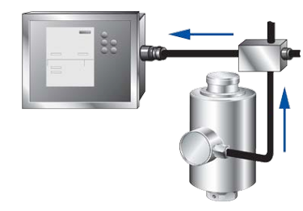
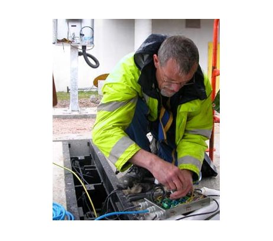

Analog Load Cells
Kelebihan :
• Biaya rendah
• Teknologi yang terkenal – sebagian besar perusahaan skala menawarkan pilihan Load Cells analog
Kelemahan :
• Keakuratan terbatas
• Lebih rentan terhadap kegagalan, sehingga masa pakainya lebih pendek daripada teknologi lain
• Memerlukan kotak sambungan yang merupakan sumber masalah umum
• Memerlukan penyesuaian manual yang memakan waktu untuk kalibrasi
• Tidak dapat memeriksa status sinyal Load Cells individual dalam sistem
Kinerja Load Cells analog dapat dipengaruhi oleh dua elemen utama. Salah satunya adalah sifat keluaran analog itu sendiri; yang lainnya adalah konfigurasi fisik Load Cells. Untuk memahami faktor-faktor yang dapat memengaruhi kinerja penimbangan dalam Load Cells analog, pertama-tama Anda harus memahami bagaimana keluaran analog dihasilkan dan digunakan di seluruh sistem penimbangan. Dalam sistem analog, keluaran setiap Load Cells hanyalah tegangan listrik yang digunakan untuk menentukan pengukuran berat. Tingkat tegangan tersebut sangat kecil, sehingga sensitif terhadap gangguan dan kesalahan.
Apa isi sinyal analog?
Sinyal Load Cells analog hanyalah tegangan listrik. Tidak ada data yang terkandung dalam sinyal tersebut. Tegangan listrik bergantung pada berat yang diukur oleh Load Cells tersebut. Ketika tegangan semua Load Cells dalam timbangan digabungkan, tegangan tersebut digunakan untuk menentukan berat total yang dibaca oleh seluruh timbangan.
Berapa tegangan dalam sinyal analog? Sangat sedikit. Faktanya, itu adalah salah satu kelemahan utama Load Cells analog. Tegangan yang digunakan sangat kecil sehingga tidak memerlukan banyak gangguan untuk mengubah nilainya. Bahkan gangguan sekecil apa pun yang menyebabkan perubahan kecil pada tegangan akan menyebabkan kesalahan penimbangan.
Nilai tegangan tipikal untuk Load Cells analog tunggal
Nilai berat :
• Kisaran kapasitas penuh dari satu Load Cells (30 t). Analog signal voltage : 0.03 – 0.04 volts
• Berat truk bermuatan rata-rata per Load Cells (4.000 kg atau 9.000 lbs.) Analog signal voltage : 0.004 volts
• Satu pembagian skala, atau penambahan bobot Analog signal voltage : 0.000002 volts per 20 kg. atau 0.000001 volts per 20 lbs.
Dengan kata lain, pada sebagian besar timbangan truk analog, jika sinyal dari Load Cells tunggal berubah hanya sebesar 0,00002 volt antara Load Cells dan terminal timbangan, pembacaan berat akan salah sebesar 20 kg atau sekitar 44 lbs. Ada sejumlah hal yang dapat menyebabkan sinyal ini berfluktuasi sebanyak ini atau lebih.
Interferensi dan sinyal analog
Sinyal Load Cells dilindungi saat masih berada di dalam Load Cells. Rumah sebagian besar Load Cells berfungsi sebagai sangkar Faraday untuk melindungi sinyal tegangan dari gangguan dan bahaya lingkungan. Namun, saat sinyal meninggalkan Load Cells, sinyal tersebut menghadapi banyak tantangan yang dapat mencegahnya mencapai terminal timbangan persis seperti saat diproduksi. Mari kita ikuti sinyal tegangan analog melalui timbangan:
• Load Cells ke kotak sambungan
Pertama, sinyal tegangan analog akan mengalir melalui kabel (seringkali sekitar 7,5 m atau 25 kaki panjangnya), untuk mencapai kotak sambungan. Hambatan listrik kabel ini dapat berubah karena suhu, kualitas sambungan, gangguan elektromagnetik dari motor, kabel listrik, radio, dan lain-lain.
• Kotak sambungan
Selanjutnya, sinyal tegangan melewati satu atau lebih kotak sambungan untuk digabungkan dengan sinyal dari Load Cells lainnya. Di sana, segel cuaca pada panel akses sering kali dapat memungkinkan masuknya uap air ke dalam kotak sambungan. Uap air menyerang papan sirkuit, sambungan solder, dan sambungan kabel manual di dalamnya. Sambungan yang basah dan/atau terkorosi dapat menurunkan kekuatan sinyal dengan mengubah resistansi sirkuit.
• Kotak sambungan ke terminal
Akhirnya, sinyal tegangan gabungan berjalan melalui kabel lain ke terminal timbangan – yang panjangnya 20 m (65 kaki) atau lebih. Sekali lagi, kabel itu sendiri dapat menurunkan sinyal karena faktor-faktor berpengaruh yang memengaruhi integritas atau resistansi listriknya. Karena sinyal tersebut mencakup nilai tegangan gabungan dari setiap Load Cells, gangguan apa pun di sana memiliki efek gabungan.
Konversi analog ke digital
Setelah sinyal tegangan gabungan tiba di terminal timbangan, sinyal tersebut diukur dan disamakan dengan nilai berat yang dapat ditampilkan oleh terminal. Proses ini mengubah sinyal analog menjadi sinyal digital yang mewakili berat pada timbangan. Untuk sistem analog, itu adalah langkah terakhir dalam proses pengukuran berat. Perbedaan mendasar antara timbangan kendaraan analog dan digital adalah tempat terjadinya konversi analog ke digital. Sistem analog melakukan konversi setelah sinyal analog akhirnya mencapai terminal timbangan. Sistem digital melakukan konversi ini di dalam setiap Load Cells sementara sinyal pengukur regangan asli masih terlindungi dari gangguan. Itu memungkinkan sistem untuk menggunakan sinyal data biner dari Load Cells ke terminal. Sinyal data digital itu jauh lebih kebal terhadap gangguan.
Penyelesaian Masalah
Jadi apa yang terjadi ketika sinyal dari satu Load Cells analog salah karena degradasi atau alasan lain? Sinyal tegangan buruk yang dihasilkan cukup ditambahkan ke sinyal tegangan dari Load Cells analog lainnya dan dikirim ke rumah timbangan. Ini menciptakan pembacaan berat yang salah. Jika kesalahannya signifikan, operator timbangan mungkin memperhatikannya dan menyelidikinya. Namun, itu mungkin hanya terjadi jika Load Cells benar-benar "mati." Jika tidak, operator timbangan tidak memiliki cara untuk mengetahui apakah timbangan tersebut tidak akurat. Karena semua sinyal Load Cells telah ditambahkan bersama-sama, tidak ada cara mudah untuk mengetahui sel mana dari 6-12 yang menyebabkan masalah.
Seorang teknisi menguji sambungan kabel Load Cells di dalam kotak sambungan.
Penyesuaian dan Kalibrasi
Tantangan lain yang muncul akibat nilai tegangan kecil yang digunakan dalam sistem analog adalah kalibrasi timbangan. Untuk mencoba memastikan bahwa Load Cells analog memiliki berat yang seragam, setiap sinyal bergerak melalui potensiometer di kotak sambungan. Selama kalibrasi timbangan, potensiometer harus disesuaikan secara manual oleh teknisi timbangan. Ini adalah proses yang rumit dan memakan waktu.
Kelembaban
Karena sebagian besar timbangan truk berada di luar ruangan, semua sirkuit listrik harus dilindungi dari kelembapan. Itu bisa menjadi tugas yang sulit, terutama untuk kotak sambungan, yang harus dibuka secara berkala oleh petugas servis untuk mengatasi masalah. Semua penutup harus sangat kokoh dan idealnya harus tertutup rapat, atau kedap udara, untuk melindungi dari korosi akibat kelembapan di udara. Sambungan juga harus kedap air. Kabel harus dilindungi dari masuknya kelembapan, abrasi, dan kerusakan.
Kabel dari Load Cells analog ke kotak sambungan merupakan bagian integral dari rangkaian Load Cells analog. Jika salah satu rusak, baik kabel maupun Load Cells harus diganti sebagai satu kesatuan dalam sebagian besar kasus. Kabel pada sebagian besar Load Cells analog tidak dapat diperbaiki karena sinyal Load Cells dikalibrasi, atau disetel, dengan kabel asli. Sambungan apa pun akan mengubah sinyal. Perhatikan juga bahwa tempat kabel melewati penutup Load Cells menyediakan jalur potensial untuk penetrasi kelembapan dan korosi berikutnya pada rangkaian di dalamnya.